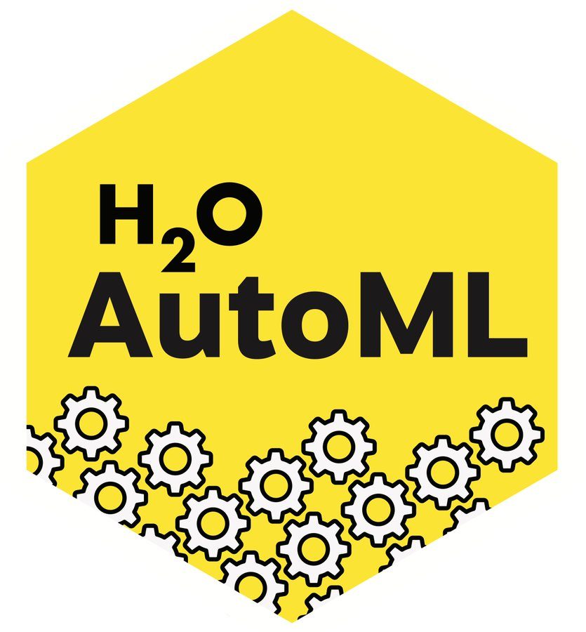
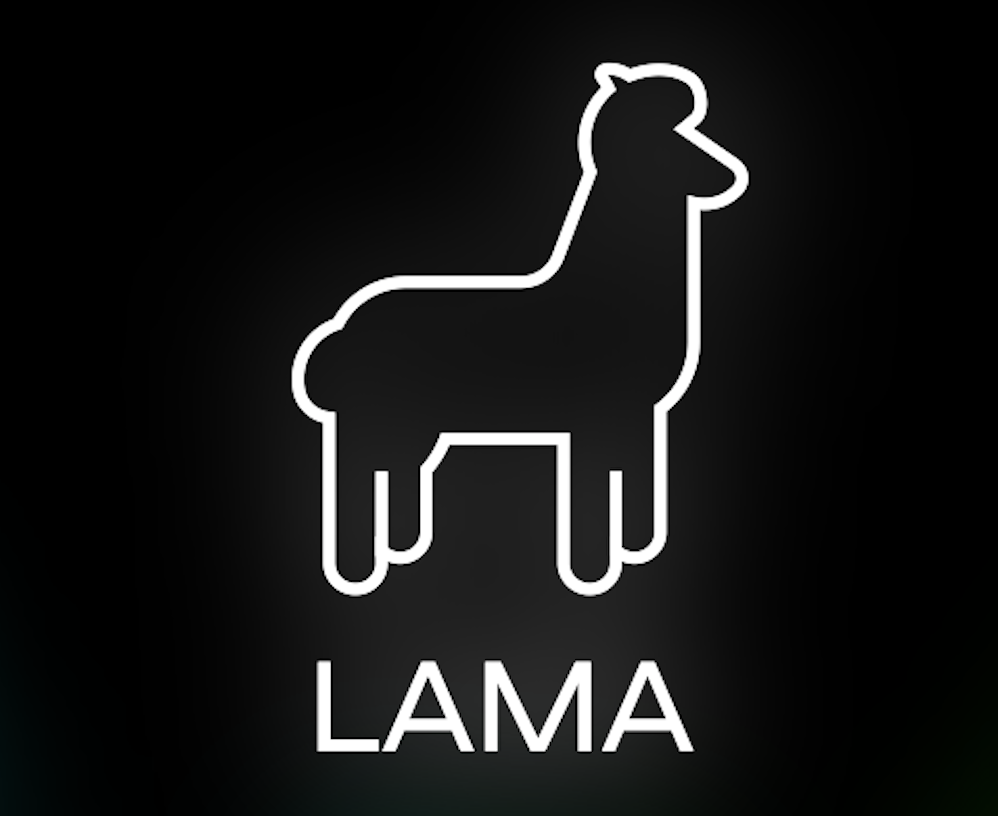

AutoML Frameworks
There is more to an AutoML system than just its performance. This page contains more information about the integrated AutoML frameworks, including links to their papers, repositories , and
documentation üìñ. Summaries taken directly from the respective
documentation pages. Want to integrate your own framework?
Adding your own framework
is relatively simple.
, and
documentation üìñ. Summaries taken directly from the respective
documentation pages. Want to integrate your own framework?
Adding your own framework
is relatively simple.

AutoGluon enables easy-to-use and easy-to-extend AutoML with a focus
on automated stack ensembling, deep learning, and real-world
applications spanning image, text, and tabular data.
AutoGluon-Tabular: Robust and Accurate AutoML for Structured Data
We introduce AutoGluon-Tabular, an open-source AutoML framework
that requires only a single line of Python to train highly
accurate machine learning models on an unprocessed tabular
dataset such as a CSV file. Unlike existing AutoML frameworks
that primarily focus on model/hyperparameter selection,
AutoGluon-Tabular succeeds by ensembling multiple models and
stacking them in multiple layers. Experiments reveal that our
multi-layer combination of many models offers better use of
allocated training time than seeking out the best. A second
contribution is an extensive evaluation of public and commercial
AutoML platforms including TPOT, H2O, AutoWEKA, auto-sklearn,
AutoGluon, and Google AutoML Tables. Tests on a suite of 50
classification and regression tasks from Kaggle and the OpenML
AutoML Benchmark reveal that AutoGluon is faster, more robust,
and much more accurate. We find that AutoGluon often even
outperforms the best-in-hindsight combination of all of its
competitors. In two popular Kaggle competitions, AutoGluon beat
99% of the participating data scientists after merely 4h of
training on the raw data.
Auto-sklearn
Auto-sklearn is an automated machine learning toolkit and a drop-in
replacement for a scikit-learn estimator. Auto-sklearn frees a
machine learning user from algorithm selection and hyperparameter
tuning. It leverages recent advantages in Bayesian optimization,
meta-learning and ensemble construction.
Auto-Sklearn 2.0: Hands-free AutoML via Meta-Learning
Automated Machine Learning (AutoML) supports practitioners and
researchers with the tedious task of designing machine learning
pipelines and has recently achieved substantial success. In this
paper we introduce new AutoML approaches motivated by our
winning submission to the second ChaLearn AutoML challenge. We
develop PoSH Auto-sklearn, which enables AutoML systems to work
well on large datasets under rigid time limits using a new,
simple and meta-feature-free meta-learning technique and employs
a successful bandit strategy for budget allocation. However,
PoSH Auto-sklearn introduces even more ways of running AutoML
and might make it harder for users to set it up correctly.
Therefore, we also go one step further and study the design
space of AutoML itself, proposing a solution towards truly
hands-free AutoML. Together, these changes give rise to the next
generation of our AutoML system, Auto-sklearn 2.0 . We verify
the improvements by these additions in a large experimental
study on 39 AutoML benchmark datasets and conclude the paper by
comparing to other popular AutoML frameworks and Auto-sklearn
1.0 , reducing the relative error by up to a factor of 4.5, and
yielding a performance in 10 minutes that is substantially
better than what Auto-sklearn 1.0 achieves within an hour.
Efficient and Robust Automated Machine Learning
The success of machine learning in a broad range of applications
has led to an ever-growing demand for machine learning systems
that can be used off the shelf by non-experts. To be effective
in practice, such systems need to automatically choose a good
algorithm and feature preprocessing steps for a new dataset at
hand, and also set their respective hyperparameters. Recent work
has started to tackle this automated machine learning (AutoML)
problem with the help of efficient Bayesian optimization
methods. In this work we introduce a robust new AutoML system
based on scikit-learn (using 15 classifiers, 14 feature
preprocessing methods, and 4 data preprocessing methods, giving
rise to a structured hypothesis space with 110 hyperparameters).
This system, which we dub auto-sklearn, improves on existing
AutoML methods by automatically taking into account past
performance on similar datasets, and by constructing ensembles
from the models evaluated during the optimization. Our system
won the first phase of the ongoing ChaLearn AutoML challenge,
and our comprehensive analysis on over 100 diverse datasets
shows that it substantially outperforms the previous state of
the art in AutoML. We also demonstrate the performance gains due
to each of our contributions and derive insights into the
effectiveness of the individual components of auto-sklearn.

FLAML is a lightweight Python library that finds accurate machine
learning models automatically, efficiently and economically. It
frees users from selecting learners and hyperparameters for each
learner.
FLAML: A Fast and Lightweight AutoML Library
We study the problem of using low computational cost to automate
the choices of learners and hyperparameters for an ad-hoc
training dataset and error metric, by conducting trials of
different configurations on the given training data. We
investigate the joint impact of multiple factors on both trial
cost and model error, and propose several design guidelines.
Following them, we build a fast and lightweight library FLAML
which optimizes for low computational resource in finding
accurate models. FLAML integrates several simple but effective
search strategies into an adaptive system. It significantly
outperforms top-ranked AutoML libraries on a large open source
AutoML benchmark under equal, or sometimes orders of magnitude
smaller budget constraints.
GAMA is developed for AutoML research and features a flexible AutoML
pipeline, which makes it easy to develop and evaluate new AutoML
components. GAMA's benchmarking configuration features evolutionary
optimization and ensemble construction.
GAMA: A General Automated Machine Learning Assistant
The General Automated Machine learning Assistant (GAMA) is a
modular AutoML system developed to empower users to track and
control how AutoML algorithms search for optimal machine
learning pipelines, and facilitate AutoML research itself. In
contrast to current, often black-box systems, GAMA allows users
to plug in different AutoML and post-processing techniques, logs
and visualizes the search process, and supports easy
benchmarking. It currently features three AutoML search
algorithms, two model post-processing steps, and is designed to
allow for more components to be added.

H2O AutoML
H2O's AutoML can be used for automating the machine learning
workflow, which includes automatic training and tuning of many
models within a user-specified time-limit. H2O offers a number of
model explainability methods that apply to AutoML objects (groups of
models), as well as individual models (e.g. leader model).
Explanations can be generated automatically with a single function
call, providing a simple interface to exploring and explaining the
AutoML models.
H2O AutoML: Scalable Automatic Machine Learning
H2O is an open source, distributed machine learning platform
designed to scale to very large datasets, with APIs in R,
Python, Java and Scala. We present H2O AutoML, a highly
scalable, fully-automated, supervised learning algorithm which
automates the pro- cess of training a large selection of
candidate models and stacked ensembles within a single function.
The result of the AutoML run is a “leaderboard”: a ranked list
of models, all of which can be easily exported for use in a
production environment. Models in the leader- board can be
ranked by numerous model performance metrics or other model
attributes such as training time or average per-row prediction
speed. The H2O AutoML algorithm relies on the efficient training
of H2O machine learning al- gorithms to produce a large number
of models in a short amount of time. H2O AutoML uses a
combination of fast random search and stacked ensembles to
achieve results competitive with, and often better than, other
frameworks which rely on more complex model tuning techniques
such as Bayesian optimization or genetic algorithms. H2O AutoML
trains a va- riety of algorithms (e.g. GBMs, Random Forests,
Deep Neural Networks, GLMs), yielding a healthy amount of
diversity across candidate models, which can be exploited by
stacked ensembles to produce a powerful final model. The
effectiveness of this technique is reflected in the OpenML
AutoML Benchmark, which compares the performance of several of
the most well known, open source AutoML systems across a number
of datasets.

LightAutoML
LightAutoML is open-source Python library aimed at automated machine
learning. It is designed to be lightweight and efficient for various
tasks with tabular, text data.
Paper to be added.

The mljar-supervised is an Automated Machine Learning Python package
that works with tabular data. It is designed to save time for a data
scientist. It abstracts the common way to preprocess the data,
construct the machine learning models, and perform hyper-parameters
tuning to find the best model üèÜ. It is no black-box as you can see
exactly how the ML pipeline is constructed (with a detailed Markdown
report for each ML model).
No paper available.

TPOT is a Python Automated Machine Learning tool that optimizes
machine learning pipelines using genetic programming. It has a focus
on optimizing models for biomedical data.
Automating biomedical data science through tree-based pipeline optimization
Automated machine learning (AutoML) systems are helpful data
science assistants designed to scan data for novel features,
select appropriate supervised learning models and optimize their
parameters. For this purpose, Tree-based Pipeline Optimization
Tool (TPOT) was developed using strongly typed genetic
programing (GP) to recommend an optimized analysis pipeline for
the data scientist’s prediction problem. However, like other
AutoML systems, TPOT may reach computational resource limits
when working on big data such as whole-genome expression data.